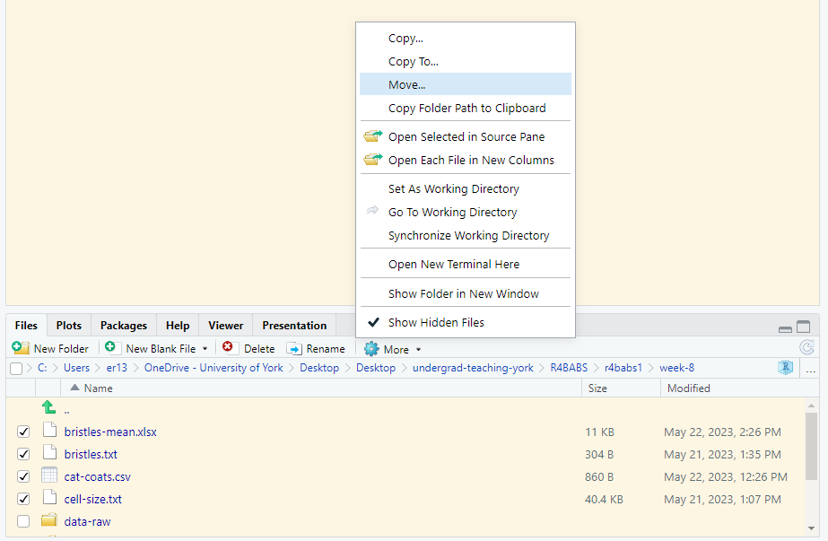

Types of variable, the normal distribution and summarising data
Introduction

Session overview
In this session you will learn how to import data from files in your working directory and from a folder in your working directory. This will develop your understanding of working directories and paths. You will also create summaries and plots for data you import. This will give you more practice customising plots and using the pipe.
Getting started
Start RStudio from the Start menu.
Make an RStudio project for this workshop by clicking on the drop-down menu on top right where it says Project: (None) and choosing New Project, then New Directory, then New Project. Navigate to the r-july folder and name the RStudio Project ‘session-2’.
Make a new script then save it with a name like import-summarise-plot.R to carry out the rest of the work.
Add a comment to the script: # Types of variable, the normal distribution and summarising data
Exercises
Importing data from files
Last session we created data by typing the values in to R. This is not practical when you have a lot of data. For example if you have recorded a lot of data into a spreadsheet, or you are using a data file that has been supplied to you by a person or a machine. Far more commonly, we import data from a file into R. This requires you know two pieces of information.
-
What format the data are in
The format of the data determines what function you will use to import it and the file extension often indicates format.
-
.txta plain text file1, where the columns are often separated by a space but might also be separated by a tab, a backslash or forward slash, or some other character -
.csva plain text file where the columns are separated by commas -
.xlsxan Excel file
-
-
Where the file is relative to your working directory
Rcan only read in a file if you say where it is, i.e., you give its relative path.
We will first save the four files for this workshop to our Project folder (r-july) and read them in. Then we will then create a new folder inside our Project folder called data-raw, move the data files into it and read them in from there. This will allow you to see how the file paths need to be modified when a file is not in your working directory.
Save these four files in to your r-july folder
- The coat colour and mass of 62 cats: cat-coats.csv
- The relative size of over 5000 cells measure by forward scatter (FSC) in flow cytometry: cell-size.txt
- The number of sternopleural bristles on 96 female Drosophila: bristles.txt
- The number of sternopleural bristles on 96 female Drosophila (with technical replicates): bristles-mean.xlsx
The first three files can be read in with core tidyverse Wickham et al. (2019) functions and the last can be read in with the readxl Wickham and Bryan (2025) package.
Load the two packages
We will first read in cat-coats.csv. A .csv. extension suggests this is plain text file with comma separated columns. However, before we attempt to read it it, when should take a look at it. We can do this from RStudio
Go to the Files pane (bottom right), click on the cat-coats.csv file and choose View File2
{kind=link}
Any plain text file will open in the top left pane (Excel files will launch Excel).
Is the file csv?
What kind of variables does the file contain?
Read in the csv file with:
cats <- read_csv("cat-coats.csv")The data from the file a read into a dataframe called cats and you will be able to see it in the Environment.
Click on each of the remaining files and choose View File.
In each case, say what the format is and what types of variables it contains.
We use the read_table()3 command to read in plain text files of single columns or where the columns are separated by spaces.
The file cell-size.txt can be read into a dataframe called cells using read_table():
cells <- read_table("cell-size.txt")Now you try reading bristles.txt in to a dataframe called fly_bristles
The readxl package we loaded earlier has two useful functions for working with Excel files: excel_sheets("filename.xlsx") will list the sheets in an Excel workbook; read_excel("filename.xlsx") will read in to top sheet or a specified sheet with a small modification read_excel("filename.xlsx", sheet = "Sheet1").
List the the names of the sheets and read in the sheet with the data like this:
excel_sheets("bristles-mean.xlsx")
fly_bristles_means <- read_excel("bristles-mean.xlsx", sheet = "means")Well done! You can now read read in from files in your working directory.
To help you understand relative file paths, we will now move the data files.
First remove the dataframes you just created to make it easier to see whether you can successfully read in the files from a different place:
rm(cats, fly_bristles, cells, fly_bristles_means)Now make a new folder called data-raw. You can do this on the Files Pane by clicking New Folder and typing into the box that appears.
Check the boxes next to the file names and choose More | Move… and select the data-raw folder.

The files will move. To import data from files in thedata-raw folder, you need to give the relative path to the file from the working directory. The working directory is the Project folder, r-july so the relative path is data-raw/cat-coats.csv
Import the cat-coats.csv data like this:
cats <- read_csv("data-raw/cat-coats.csv")Now you do the other files!
From this point forward in the course, we will always create a data-raw folder each time we make a new Project.
Each time you start a new piece of work, make a new Project with a data-raw folder inside. Always using the same organisation will make it easier to find your files and to read them in.
These are the most common forms of data file you will encounter at first. However, data can certainly come to you in other formats particularly when they have come from particular software. Usually, there is an R package specially for that format.
In the rest of the workshop we will take each dataset in turn and create summaries and plots appropriate for the data types. Data is summarised using the group_by() and summarise() functions
Summarising discrete data: Cat coat
The most appropriate way to summarise nominal data like the colour of cat coats is to tabulate the number of cats with each colour.
Summarise the cats dataframe by counting the number of cats in each category
# A tibble: 6 × 2
# Groups: coat [6]
coat n
<chr> <int>
1 black 23
2 calico 1
3 ginger 10
4 tabby 8
5 tortoiseshell 5
6 white 15|> is the pipe and can be produced with Ctrl+Shift+M
This sort of data might be represented with a barchart. You have two options for producing that barchart:
plot the summary table using
geom_col()plot the raw data using
geom_bar()
We did the first of these last session. The geom_col() function uses the numbers in a second column to determine how high the bars are. However, the geom_bar() function will do the tabulating for you.
Plot the coat data using geom_bar:
{kind=link}
The gaps that R put automatically between the bars reflects that the coat colours are discrete categories.
Summarising Counts: Bristles
Counts are discrete and can be thought of a categories with an order (ordinal).
Summarise the fly_bristles dataframe by counting the number of flies in each category of bristle number
Since counts are numbers, we might also want to calculate some summary statistics such as the median and interquartile range.
Summarise the fly_bristles dataframe by calculate the median and interquartile range
# A tibble: 1 × 2
`median(number)` `IQR(number)`
<dbl> <dbl>
1 6 4As the interquartile is 4 and the median is 6 then 25% flies have 4 bristles or fewer and 25% have 8 or more.
The distribution of counts4 is not symmetrical for lower counts so the mean is not usually a good way to summarise count data.
If you want to save the table you created and give the columns better names you can make two adjustments:
we have saved the output to an object
fly_bristles_summaryusing assignment<-. This means you will not see output from the command.we have given the columns better names
medandinterquartileusing the=operator.
Plot the bristles data using geom_bar:
If counts have a a high mean and big range, like number of hairs on a person’s head, then you can often treat them as continuous. This means you can use statistics like the mean and standard deviation to summarise them, histograms to plot them and use some standard statistical tests on them.
Summarising continuous data
Cat mass
The variable mass in the cats dataframe is continuous. Very many continuous variables have a normal distribution. e normal distribution is also known as the bell-shaped curve. If we had the mass of all the cats in the world, we would find many cats were near the mean and fewer would be away from the mean, either much lighter or much heavier. In fact 68% would be within one standard deviation of the mean and about 96% would be within two standard deviations.
{kind=link}
We can find the mean mass with:
We can add any sort of summary by placing it inside the the summarise parentheses. Each one is separated by a comma. We did this to find the median and the interquatrile range for fly bristles.
For example, another way to calculate the number of values is to use the length() function:
# A tibble: 1 × 2
mean n
<dbl> <int>
1 4.51 62Adapt the code to calculate the mean, the sample size and the standard deviation (sd())
A single continuous variable can be plotted using a histogram to show the shape of the distribution.
Plot a histogram of cats mass:
ggplot(cats, aes(x = mass)) +
geom_histogram(bins = 15, colour = "black") {kind=link}
Notice that there are no gaps between the bars which reflects that mass is continuous. bins determines how many groups the variable is divided up into (i.e., the number of bars) and colour sets the colour for the outline of the bars. A sample of 62 is a relatively small number of values for plotting a distribution and the number of bins used determines how smooth or normally distributed the values look.
Experiment with the number of bins. Does the number of bins affect how you view the distribution.
Next week we will practice summarise and plotting data files with several variables but just to give you a taste, we will find summary statistics about mass for each of the coat types.
The group_by() function is used before the summarise() to do calculations for each of the coats:
# A tibble: 6 × 3
coat mean standard_dev
<chr> <dbl> <dbl>
1 black 4.63 1.33
2 calico 2.19 NA
3 ginger 4.46 1.12
4 tabby 4.86 0.444
5 tortoiseshell 4.50 0.929
6 white 4.34 1.34 You can read this as:
take cats and then group by coat and then summarise by finding the mean of mass and the standard deviation of mass
Why do we get an NA for the standard deviation of the calico cats?
Cells
Summarise the cells dataframe by calculating the mean, median, sample size and standard deviation of FSC.
Add a column for the standard error which is given by \(\frac{s.d.}{\sqrt{n}}\)
Means of counts
Many things are quite difficult to measure or count and in these cases we often do technical replicates. A technical replicate allows us the measure the exact same thing to check how variable the measurement process is. For example, Drosophila are small and counting their sternopleural bristles is tricky. In addition, where a bristle is short (young) or broken scientists might vary in whether they count it. Or people or machines might vary in measuring the concentration of the same solution.
When we do technical replicates we calculate their mean and use that as the measure. This is what is in our fly_bristles_means dataframe - the bristles of each of the 96 flies was counted by 5 people and the data are those means. These has an impact on how we plot and summarise the dataset because the distribution of mean counts is continuous! We can use means, standard deviations and histograms.
You’re finished!
🥳 Well Done! 🎉
{kind=link}
References
Footnotes
Plain text files can be opened in notepad or other similar editor and still be readable.↩︎
Do not be tempted to import data this way. Unless you are careful, your data import will not be scripted or will not be scripted correctly.↩︎
note
read_csv()andread_table()are the same functions with some different settings.↩︎Count data are usually “Poisson” distributed.↩︎